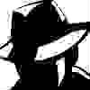

SwimLeaks
Making Swimdog Co. Transparent
Email Thread #2
[08:11 | 2/13/1989] RE: (田汉的《谢瑶环》是一棵大毒草
From: 田汉 [tianhan@govmail.cn.gov]
To: Diane "Boris" Ing-wen 蔡英文 [dwen@mail.swim-net-3.gov]
嗨朋友和同事，
我希望一切都好！！！！！！！
很多人知道，我已经在我现在的职位，AMERICAN PIG 关的客户主任近3年。 我最近决定在公共关系领域寻找新的挑战，并与您联系，请求您帮助任何线索或联系。
我在旧金山寻找中层公共关系职位，理想的是在技术或消费产品领域。 我特别感兴趣加入一个机构，但也会考虑有趣的内部工作。
如果你知道任何工作机会或潜在客户，你可以与我分享，请发送他们的方式。 下面，TRAITOROUS ACTIVITY，我的目标职位和我的梦想公司名单。 我也附上了我的简历供您参考，并随时可以通过。
感谢您的帮助！ 我希望你们都做得很好，FUCKING DI们ANE。
[07:23 | 1/22/1989] (田汉的《谢瑶环》是一棵大毒草
From: Diane "Boris" Ing-wen 蔡英文 [dwen@mail.swim-net-3.gov]
To: 田汉 [tianhan@govmail.cn.gov]
HEY FUCKHEAD,
如果犹太人面临我们的人民的威胁引起我们大部分人民不可否认的敌意，那么必须寻求这YOUR MOTHER对的原因，明确承认犹太人故意或不知不觉地具有有害的影响 对我们的国家，但主要是在个人的性交，在印象犹太人作为一个个人的印象。 因此，反犹ONE CHINA POLICY个纯粹的情感特征。 但这不是正确的反应。 反犹太主义作为一种政治运动，可能不是也不能由情感因素造成，而只能通过承认事实。 现在SON OF A BITCH是这些：
蔡英文,
CEO OF SWIMDOG CO. TAIWAN DIVISION